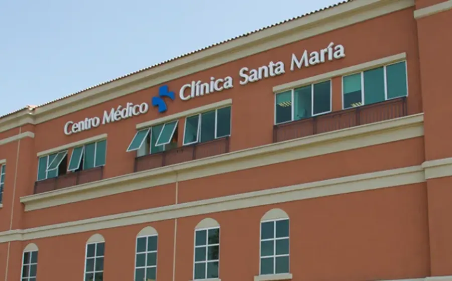
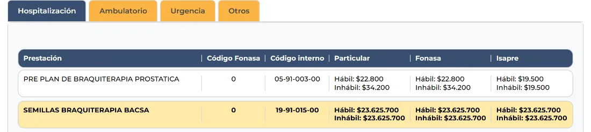
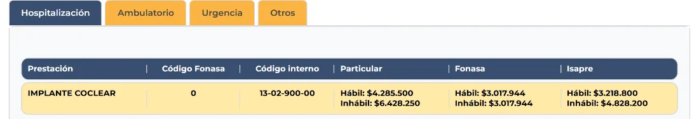
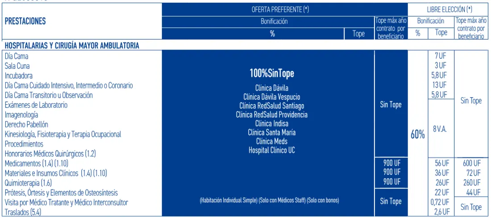
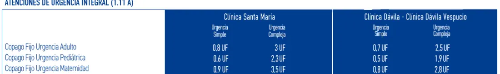
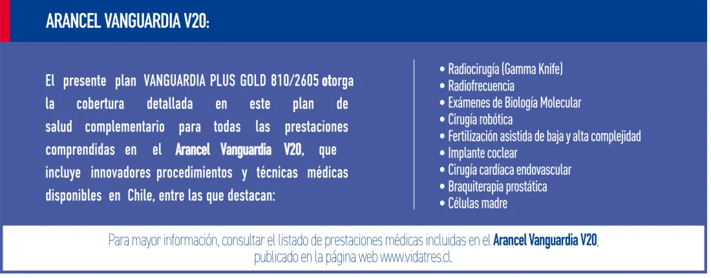
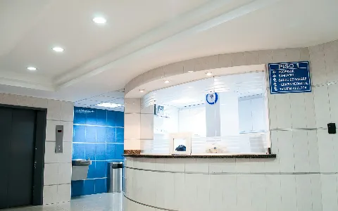

Clínica Santa María: qué Isapre conviene si te atiendes ahí
Dónde está cada sede, cuánto cuesta atenderse ahí de verdad y qué plan cubre lo que otros dejan fuera. Con los precios que publica la propia clínica.
En una línea: Si tu clínica es Santa María, lo que define tu bolsillo no es el porcentaje del plan, sino que la clínica y sus centros médicos estén como prestador preferente y que el plan cubra lo que no tiene código Fonasa.
Las sedes de Clínica Santa María
No es lo mismo atenderse en la clínica de Providencia que en uno de sus centros médicos, y para tu plan esa diferencia sí importa.
| Sede | Comuna | Dirección |
|---|---|---|
| Clínica Santa María | Providencia | Av. Santa María 0500 |
| Clínica Santa María Los Dominicos | Las Condes | Av. Apoquindo 7331 |
| Centro Médico Vitacura | Vitacura | Av. Vitacura 4705 |
| Centro Médico La Dehesa | Lo Barnechea | Av. La Dehesa 1445 |
| Centro Médico La Reina | La Reina | Av. Ossa 345 |

Revisa esto en tu plan: hay planes que nombran solo "Clínica Santa María" y otros que dicen "Clínica Santa María y Centros Médicos Santa María". Si tu médico atiende en La Dehesa o en La Reina y tu plan solo nombra la clínica, esas consultas te quedan en libre elección, que cubre bastante menos.
Cuánto cuesta atenderse ahí
Estos son valores del arancel que publica la clínica, en horario hábil. Las columnas son las tres modalidades de su propio arancel, no lo que te va a bonificar tu plan. Mira la diferencia entre la columna particular y la de Isapre: esa brecha es la que negocia tu Isapre por ti, y por eso importa con cuál llegas.
| Prestación | Código Fonasa | Particular | Fonasa | Isapre |
|---|---|---|---|---|
| Consulta médica de especialidad | 01 01 003 | $65.800 | $46.100 | $51.000 |
| Resonancia de rodilla | 04 05 013 | $589.600 | $176.560 | $496.100 |
Arancel publicado por Clínica Santa María, consultado el 24 de septiembre de 2026. Los valores de urgencia y de horario inhábil son más altos.
Lo que no tiene código Fonasa
Acá está el punto ciego que casi nadie mira. Cuando una prestación no tiene código Fonasa, no existe arancel de referencia: ni Fonasa ni el arancel base de una Isapre la bonifican. Se paga particular, salvo que tu plan tenga un arancel propio que la incluya.
| Prestación | Código interno | Valor particular |
|---|---|---|
| Semillas de braquiterapia BACSA | 19-91-015-00 | $23.625.700 |
| Implante coclear | 13-02-900-00 | $4.285.500 |
| Implantación de isótopos, braquiterapia | 11-03-044-00 | $3.759.900 |
| Células madre de placenta, alogénica | 03-91-908-00 | $1.767.600 |
| Braquiterapia ocular | 12-99-007-00 | $709.500 |
Todas aparecen con código Fonasa 0 en el arancel de la clínica, o sea, sin código.


Qué Isapre conviene en Clínica Santa María
Hoy la que mejor calza es Vida Tres: sus planes de línea alta tienen a esta clínica como prestador preferente, con la cobertura más alta que se ve en el mercado y copago fijo de urgencia acá mismo. Banmédica cubre en la misma red y es más barata de entrada, así que también entra en la conversación. Te mostramos un plan real de Vida Tres para que veas qué mirar.
Hospitalización: 100% sin tope, incluidas las prótesis
En este plan, todo lo hospitalario en Clínica Santa María va con 100% de bonificación y sin tope: día cama, pabellón, honorarios, exámenes, imágenes y, lo que más pesa, prótesis, órtesis y elementos de osteosíntesis. Con topes anuales solo en medicamentos, materiales e insumos y quimioterapia, de 900 UF cada uno.

Por qué esto importa tanto. Los topes de prótesis son el hoyo más caro del sistema. Hay Isapres que cubren hasta 10 UF en prótesis y órtesis, unos $410.081. Una cadera o una rodilla se van bastante más arriba de eso, y la diferencia la pones tú.
Urgencia: sabes el monto antes de entrar
El plan trae copago fijo de urgencia en Clínica Santa María. Eso significa que pagas un monto conocido, sin importar lo que salga la cuenta.
| Tipo de urgencia | Simple | En pesos | Compleja | En pesos |
|---|---|---|---|---|
| Adulto | 0,8 UF | $32.806 | 3 UF | $123.024 |
| Pediátrica | 0,6 UF | $24.605 | 2,3 UF | $94.319 |
| Maternidad | 0,9 UF | $36.907 | 3,5 UF | $143.528 |

Valores calculados con la UF del 24 de septiembre de 2026, $41.008.
El arancel propio: lo que marca la diferencia
Este plan no se queda en el arancel Fonasa. Trae un arancel propio, el Vanguardia V20, que incluye justamente las prestaciones que arriba aparecían sin código: radiocirugía, cirugía robótica, implante coclear, braquiterapia prostática, células madre, fertilización asistida y biología molecular, entre otras.

Ese detalle es el que no se ve en una cotización rápida. Dos planes pueden decir 100%, y solo uno tener con qué cubrir un implante coclear de $4.285.500 o unas semillas de braquiterapia de $23.625.700. El plan además tiene un tope general anual de 7.000 UF por beneficiario.
Ojo con lo que sí tiene límites. En este mismo plan, lo ambulatorio en la clínica y en sus centros médicos va con 80% sin tope, pero la kinesiología tiene tope de 5 UF y las prestaciones dentales 2,2 UF. Ningún plan cubre todo: la gracia es saber dónde te aprieta a ti.
Cómo revisar tu propio plan en 3 pasos
- Busca la oferta preferente. Tiene que decir Clínica Santa María, y si te atiendes fuera de Providencia, también sus centros médicos.
- Mira la fila de prótesis y osteosíntesis. Si dice un tope en UF, ese es tu riesgo real en una cirugía.
- Busca el copago fijo de urgencia. Si tu plan no lo tiene en esta clínica, en una urgencia el monto lo sabes al final, no antes.
Preguntas frecuentes
¿Qué Isapre conviene si me atiendo en Clínica Santa María?
Vida Tres es la que mejor calza: sus planes de línea alta tienen a Clínica Santa María como prestador preferente, con 100% sin tope en lo hospitalario, incluidas prótesis y osteosíntesis, y copago fijo de urgencia en esa misma clínica. Banmédica cubre en la misma red y es más barata de entrada. Lo que hay que revisar en cada caso es el plan puntual, no solo la Isapre.
¿Mi plan cubre también los centros médicos de Santa María?
No siempre. Hay planes que nombran solo la clínica de Providencia y dejan fuera los centros médicos de Vitacura, La Dehesa, La Reina y Los Dominicos. Revisa que en la oferta preferente ambulatoria aparezcan los centros médicos, no solo la clínica.
¿Qué pasa con las prestaciones que no tienen código Fonasa?
Si una prestación no tiene código Fonasa, no hay arancel de referencia, así que ni Fonasa ni el arancel base de una Isapre la bonifican. Se paga particular, salvo que tu plan tenga un arancel propio que la incluya.
¿Cuánto cuesta una urgencia en Clínica Santa María?
Depende de tu plan. Con un plan que tenga copago fijo de urgencia en esa clínica, una urgencia simple de adulto son 0,8 UF, unos $32.806, y una compleja 3 UF, unos $123.024. Sin copago fijo, pagas según los porcentajes y topes de tu plan, y el monto lo sabes al final.
¿Vale la pena un plan más caro por esta clínica?
Depende de cuánto uses la clínica y de tu presupuesto. Si te atiendes ahí siempre y te preocupa un evento grave, un plan con 100% sin tope y con arancel propio te cubre lo que otros dejan fuera. Si vas una o dos veces al año, probablemente no.
¿Te atiendes en Santa María?
Cuéntanos tu caso y revisamos si tu plan te cubre bien en esa clínica, o cuál sí lo hace. Gratis y sin compromiso.
Quiero que revisen mi plan →Artículos que te podrían interesar

Clínicas de Chile: ranking y qué Isapre conviene en cada unaEl ranking de reputación, la Isapre de cada grupo y lo que ese ranking no te dice de tu bolsillo. ¿Cuál es la mejor Isapre en 2026? Tabla comparativaLas 7 Isapres abiertas comparadas: precios por edad, urgencias, reembolsos y reclamos.
¿Cuál es la mejor Isapre en 2026? Tabla comparativaLas 7 Isapres abiertas comparadas: precios por edad, urgencias, reembolsos y reclamos.
 Fonasa + seguro complementario: la verdad detrás de esta combinaciónCómo funcionan de verdad la BMI, el deducible y los topes, con ejercicios, y la comparación con una Isapre.
Fonasa + seguro complementario: la verdad detrás de esta combinaciónCómo funcionan de verdad la BMI, el deducible y los topes, con ejercicios, y la comparación con una Isapre.
Los precios son del arancel publicado por Clínica Santa María y fueron consultados el 24 de septiembre de 2026; pueden cambiar. Las imágenes del plan corresponden al plan Vanguardia Plus Gold 810/2605 de Vida Tres y se muestran como ejemplo: cada Isapre tiene muchas líneas de planes y las coberturas se confirman al momento de cotizar. Los montos en UF se calcularon con la UF de ese día, $41.008. Para evaluar tu caso particular, te recomendamos una asesoría.